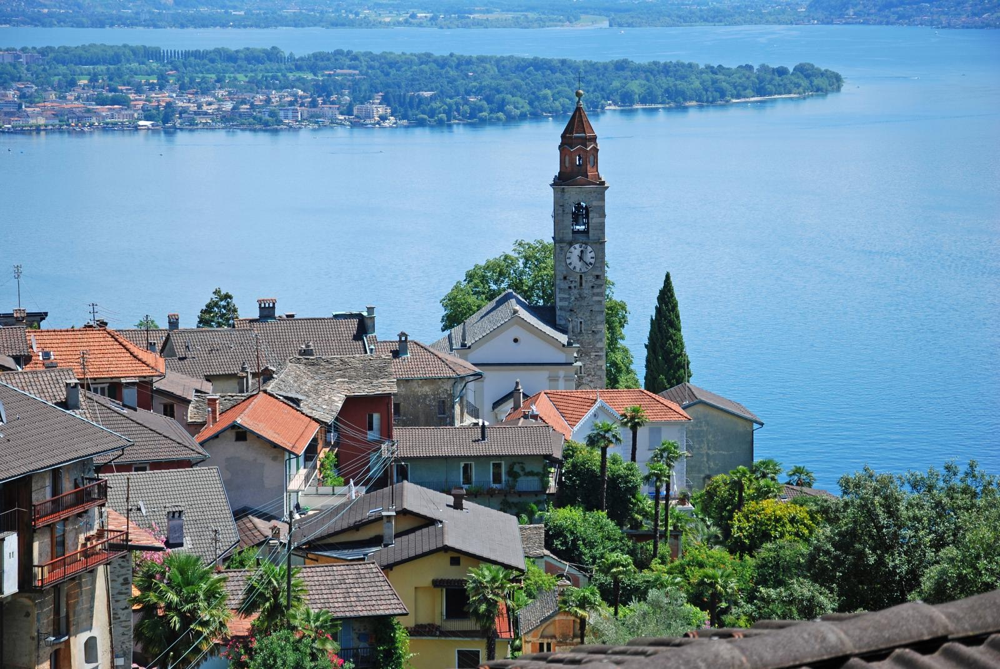
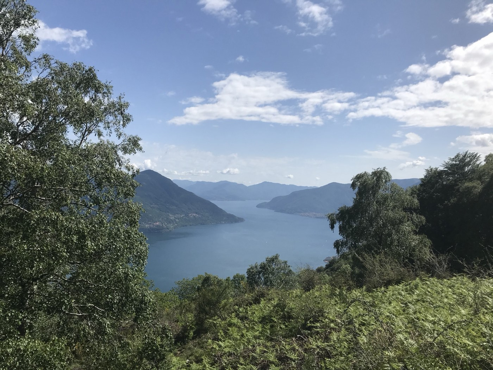

Pubblicata su ArchDaily
Casa a Brissago
Un monolite in calcestruzzo lavato che esce dal pendio, progetto dello studio Wespi de Meuron Romeo architetti. Costruzione: Verzeroli Elia e Figli SA. Completata nel 2013.
Impresa di costruzioni · Ronco sopra Ascona
Impresa di costruzioni e impresa generale a conduzione familiare. Nuove case, ristrutturazioni e sopraelevazioni, muri in pietra naturale e cemento armato. Fondata da Elia Verzeroli, guidata dal 2002 dal figlio Patrizio.

1970fondata da Elia Verzeroli
2002il figlio Patrizio alla guida
Impresa generaleedilizia e genio civile
5,0 / 53 recensioni su Google
Cosa facciamo
Sottostruttura, soprastruttura, tetti e finiture: un'unica impresa per committenti privati e pubblici, in tutto il Ticino.
Case monofamiliari e bifamiliari, edifici residenziali. Come a Brissago, Gordevio, Maggia e Locarno.
Riattazioni di case esistenti e piani in più, anche in cotto, come a Verscio.
Rivestimenti e muri con le pietre del posto. Anche i piccoli lavori: un tavolo con panchina in sasso a Brissago.
Scavi, strutture in cemento armato, sottostruttura e opere di genio civile.
Copertura del tetto e lavori da gessatore, senza cercare un'altra ditta.
Un solo interlocutore per tutta l'opera, con i termini concordati all'inizio.
Ristrutturazioni e sopraelevazioni
Si parte dalla casa com'è: muri, solette, tetto.
La copertura esistente viene smontata o sollevata.
Le pareti salgono, corso dopo corso, anche in cotto.
Il tetto torna al suo posto, poi intonaco e serramenti.
Referenze
Alcuni dei lavori pubblicati sul nostro sito precedente, per comune.
Pubblicata su ArchDaily
Un monolite in calcestruzzo lavato che esce dal pendio, progetto dello studio Wespi de Meuron Romeo architetti. Costruzione: Verzeroli Elia e Figli SA. Completata nel 2013.

La storia
Elia Verzeroli fonda l'impresa a Ronco sopra Ascona.
La ditta individuale diventa Verzeroli Elia e Figli SA.
Patrizio Verzeroli porta avanti l'impresa, oggi attiva in tutto il Cantone Ticino.
Una squadra di professionisti, operai e tecnici specializzati, per committenti pubblici ma soprattutto privati. Offerte concorrenziali, nel rispetto dei prezzi, della qualità e dei termini concordati. E una clientela che torna da anni.
"È molto bravo a costruire muri con pietre locali. Rispettano gli standard richiesti."
Roman Frey, recensione Google (tradotta)
Come lavoriamo
Veniamo a vedere il terreno o la casa e ascoltiamo cosa vi serve.
Un preventivo chiaro, con prezzi e tempi.
La nostra squadra esegue i lavori, dalla sottostruttura al tetto.
Nei termini concordati all'inizio.
Contatto
Anche su WhatsApp, al numero dell'ufficio, se attivo.